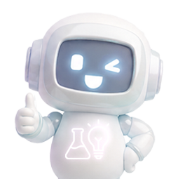

컴퓨터나 AI가 사람의 귀처럼 소리 정보를 입력하는 장치는 무엇일까요?
4가지의 소리 파도(음파) 중 가장 큰 소리를 나타내는 파도는 무엇일까요?
4가지의 소리 파도(음파) 중 가장 높은 소리를 나타내는 파도는 무엇일까요?
AI비서를 부를 때 사용하는 말을 뭐라고 할까요?
AI 비서에게 음성 명령을 내릴 때, AI가 내 뜻을 정확하게 이해하도록 하려면 어떻게 해야할까요?

정답이에요!
힌트
문장을 다시 한 번 잘 읽어봐요.